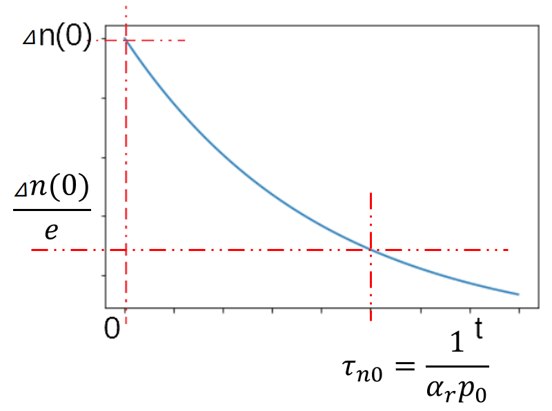

第五章
非平衡载流子和扩散运动
主要内容
- 非平衡载流子的注入和复合
- 非平衡载流子的寿命
- 准费米能级
- 复合理论
- 陷阱效应
- 载流子的扩散运动
- 载流子的漂移运动
- 连续性方程式
5.1 非平衡载流子的注入和复合
5.1.1 非平衡载流子（Nonequilibrium Excess Carriers）
- 平衡载流子
- 热平衡下，一定温度下，载流子的浓度是固定的，有$n_0p_0=n_i^2$，称为平衡载流子。
- 非平衡状态
- 如果有非温度的外部条件（比如电场，光照等），导致热平衡条件被破坏，成为非平衡状态，其表现就是$n_0p_0\neq n_i^2$
- 非平衡载流子
- 非平衡状态下，载流子的浓度会多出来一部分，称为非平衡载流子，也称过剩载流子。
5.1.2 非平衡载流子的生成（Generation）和复合（Recombination）
光照时，如果光波的能量$E_o=h\upsilon $，这里$\upsilon $是光波的频率，使得价带上的电子被吸收后能够大于禁带宽度$Eg$，就能够产生
当停止光照时，多出来的过剩载流子在特定温度下不能继续存在，其能量无法持续，会从导带重新回到价带，这称为
5.2 非平衡载流子的寿命
5.2.1 非平衡载流子的生成和衰减：寿命
首先看看非平衡载流子的生成时间，设电子浓度的变化比率为：$\frac{\mathrm{d}n(t)}{dt}=\alpha_r\left[n_i^2-n(t)p(t)\right]$， 这里$\alpha_r$是电子生成率， 且$n(t)=n_0+\Delta n(t)$, $p=p_0+\Delta p(t)=p_0+\Delta (t)n$
代入，得到：$\frac{\mathrm{d}(\Delta n(t))}{\mathrm{d}t}=\alpha_r\left[n_i^2-(n_0+\Delta n(t))(p_0+\Delta n(t))\right]$
$\frac{\mathrm{d}(\Delta n(t))}{\mathrm{d}t}=-\alpha_r\Delta n(t)\left[(n_0+p_0)+\Delta n(t)\right]$
小注入（$\Delta n(t) \ll n_0 或 p_0$）下，上式可以化简，下面考虑p型半导体，这时 $p_0 \gg n_0$，上式可以化简为：
$\frac{\mathrm{d}(\Delta n(t))}{\mathrm{d}t}=-\alpha_r p_0 \Delta n(t)$，其解为：$\Delta n(t)=\Delta n(0)/\exp(\alpha_r p_0 t)=\Delta n(0)/\exp(\frac{t}{\tau_{n0}})$
其中：$\tau_{n0}=\frac{1}{\alpha_r p_0}$ 为过剩少数载流子的寿命； $\Delta n(0)$为非平衡过剩载流子的最大值
$\Delta n(t)=\Delta n(0)/\exp(\alpha_r p_0 t)=\Delta n(0)/\exp(\frac{t}{\tau_{n0}})$的图像如下图：
定义：$R_n'=-\frac{\mathrm{d}(\Delta n(t))}{\mathrm{d}t}=\frac{\Delta n(t)}{\tau_{n0}}$ 为
由于多数过剩载流子浓度和过剩少数载流子的浓度相同，所以定义：$R_p'=R_n'=-\frac{\mathrm{d}(\Delta n(t))}{\mathrm{d}t}=\frac{\Delta n(t)}{\tau_{n0}}$ 为
寿命是非平衡载流子衰减快慢的标志，锗一般是$10^4 \mu s$（单晶）或$10^6 \mu s$(器件)，而硅可以在 $10^3 \mu s$（单晶）或$10^4 \mu s$（器件）, 砷化镓约在 $10^{-2} - 10^{-3}\mu s$，所以砷化镓比较适合高频的器件，复合速度比较快。
5.3 准费米能级
5.3.1 热平衡状态下的相同费米能级
在热平衡的非简并情况下，有
$n_0=N_C/\exp\left(\frac{E_C-E_F}{k_0T}\right)$, $p_0=N_V/\exp\left(\frac{E_F-E_V}{k_0T}\right)$
这里$E_F$是一致的，这表示电子和空穴是统一的费米能级，这也是热平衡的标志之一。
5.3.2 非热平衡状态下的费米能级
在非热平衡下，由于导带电子浓度增加（$n=n_0+\Delta n$），费米能级比平衡时上升，记为$E_{F_n}$;
同时，由于空穴浓度也增加($p=p_0+\Delta p$)，相当于价带的电子减少（空穴增加），则费米能级下降，记为$E_{F_p}$
$np=n_i^2\exp((E_{F_n}-E_{F_p})/(k_0T))$，这里，准费米能级的偏离程度反映了偏离热平衡的程度。
5.4 复合理论
- 按照复合发生的机构
- 直接复合、间接复合
- 按照复合发生的位置
- 体内复合、表面复合
- 按照复合放出能量的方法
- 发射光子，声子（加强晶格振动），转移能量给其他的载流子的动能（俄歇复合， Auger recombination）
5.4.1 直接复合
对于半导体晶体，复合率: $R=rnp$，其中$r$是电子空穴的复合概率，在热平衡时，有：$R=rn_0p_0$
相对应的，载流子的产生率: $G$，对于简并半导体，$G$是一个常数，在热平衡下，材料固定的情况下，复合=产生，于是： $G=R=rn_0p_0=rn_i^2$
在非平衡状态下，产生率不变，而电子和空穴的浓度增加，所以复合率上升，设$U_d=R-G=r(np-n_i^2)$为净复合率，表征非平衡载流子的复合情况。
因为：$n=n_0+\Delta n$, $p=p_0+\Delta p$, $\Delta n = \Delta p$, 所以： $U_d=r(n_0+p_0)\Delta p+ r(\Delta p)^2$
由此得到非平衡少子复合的平均时间：$\tau=\frac{\Delta p}{U_d}=\frac{1}{r[(n_0+p_0)+\Delta p]}$，在小注入情况下：$\Delta p \ll (n_0+p_0)$， 所以：$\tau \approx \frac{1}{r(n_0+p_0)}$，在大注入下，$\tau \approx \frac{1}{r\Delta p}$
在常温下，硅的$r=10^{-11}cm^3/s$，可以求出$\tau=3.5s$，但实际上只有几毫秒，要考虑下面的因素。
5.4.2 间接复合
禁带中有了复合中心能级，电子和空穴的复合，可以通过这个能级实现两级的复合，大大提高了复合率。
间接复合的非平衡载流子的寿命：$\tau=\frac{r_n(n_0+n_1+\Delta p)+r_p(p_0+p_1+\Delta p)}{N_t r_p r_n(n_0+p_0+\Delta p)}$
其中$r_n$是复合中心能级$E_t$俘获电子的概率，$r_p$是$E_t$俘获空穴的概率, $N_t$是杂质的浓度，$n_1$是当$E_F=E_t$时导带的电子浓度，$p_1$是当$E_F=E_t$时价带的空穴浓度。
当小注入，$\Delta p \ll (n_0+p_0)$, $\tau \approx \frac{r_n(n_0+n_1)+r_p(p_0+p_1)}{N_t r_p r_n(n_0+p_0)}$
如图，当$E_F$更靠近$E_C$时，$n_0$比较大，称为强n区，表示重掺杂，这时：$\tau=\tau_p \approx \frac{1}{N_t r_p}=常数$
如图，当$E_F$更靠近$E_i$时，$p_1$比较大，称为高阻区，这时：$\tau \approx \frac{p_1}{N_t r_n n}$，可见寿命和多子浓度$n$成反比，也就是和电导成反比。

如图，当$E_F$更靠近$E_V$时，$p_0$比较大，称为强p区，表示重掺杂，这时：$\tau=\tau_n \approx \frac{1}{N_t r_n}=常数$
如图，当$E_F$更靠近$E_i$时，$p_1$比较大，称为高阻区，这时：$\tau \approx \frac{p_1}{N_t r_n p}$，可见寿命和多子浓度$p$成反比，也就是和电导成反比。
净复合率 $U \approx \frac{N_tr(np-n_i^2)}{n+p+2n_i\mathrm{ch}\left(\frac{E_t-E_i}{k_0T}\right)}$，这里假设$r=r_n=r_p$，由此可见，$E_t \approx E_i$时，$U \to \infty$，可见，禁带中间的位置的深能级是最有效的复合中心，比如金。
5.4.3 表面复合

表面相当于几种情况：一个是表面原子相当于引入施主杂质，二是粗糙的表面相当于带来损伤，同样会引入禁带的施主和受主能级，这些禁带能级就相当于间接复合的机构，所以，本质上来看，表面复合相当于间接复合的一种。
表面复合率：$U_S=s\cdot (\Delta p)$，其中$s$是表征表面复合速度，常温下，对于锗，$s=10^2 \sim 10^6 cm/s$， 对于硅，$s=10^3 \sim 5\times10^3 cm/s$
表面复合的影响：对于器件表面，为了避免体内运行的载流子被快速复合掉，会对表面做一定处理，而在测量时，为了消除金属探针的注入效应，又要增加接触点的复合。
5.4.4 俄歇复合

俄歇效应（Auger effect）是原子发射的一个电子导致另一个电子被发射出来的物理现象。
当一个处于内层电子被移除后，留下一个空位，高能级的电子就会填补这个空位，同时释放能量。通常能量以发射光子的形式释放，但也可以通过发射原子中的一个电子来释放。第二个被发射的电子叫做俄歇电子。
俄歇复合是半导体中一个类似的俄歇现象：一个电子和空穴（电子空穴对）可以复合并通过在能带内发射电子来释放能量，从而增加能带的能量。
俄歇复合一般在窄禁带半导体或高温状态下比较多，对半导体发光器件有重要影响。
5.5 陷阱效应
5.5.1 陷阱效应
当半导体处于热平衡时，施主、受主、复合中心、或其他杂质能级，都具有一定数目的电子。
当处于非平衡时，杂质能级上的电子浓度发生变化，若减少，可以看作杂质能级收容空穴，若增加，可以看作杂质能级收容电子，这种积累非平衡载流子的作用，称为陷阱效应。
把有显著陷阱效应的杂质能级称为陷阱，相应的杂质或缺陷称为陷阱中心。
陷阱和复合中心的作用会混杂在一起，注意，这二者的区别就在于杂质能级对电子的俘获率$r_n$和空穴的俘获率$r_p$是否相同。如果$r_n \approx r_p$，则复合占主要，如果$r_n \gg r_p$，则俘获电子为主，但由于无法俘获空穴，所以无法复合，这是电子陷阱，如果$r_n \ll r_p$，则俘获空穴为主，但由于无法俘获电子，所以无法复合，这是空穴陷阱
5.5 陷阱效应对电导率的影响
陷阱效应的显著与杂质能级和$E_F$的远近有关，越靠近$E_F$越明显。当电子落入陷阱后，会发生两个情况：
【1】电子不能直接与空穴复合，必须先重新激发到导带，再通过复合中心复合，因此增加了非平衡恢复到平衡状态的弛豫时间；
【2】由于电中性，当一个陷阱中心俘获一个电子（或空穴），就会有另一极性的载流子出现，因此陷阱的俘获同样会导致电导率的改变。
如图所示p型硅，当进行光脉冲照射，得到非平衡载流子，在撤销光照后，测量其电阻会发现阻值逐渐增加（非平衡载流子逐渐复合），A部分曲线是开始时，陷阱中心都满了，只有复合起作用，但随着导带电子减少，陷阱能级开始发射电子，这延缓了复合的效果，使得电阻没有增加那么大，B是浅陷阱，c是深陷阱。
对于硫化物或氧化物半导体，陷阱中心会起到决定性的作用，使得它们成为光电导体的主要材料。
5.6 载流子的扩散运动
5.6.1 非平衡少数载流子的扩散运动
对于均匀掺杂的半导体，没有浓度差异，不会发生扩散；但发生非热平衡条件（如光照等），由于不透明，仅表面薄层产生非平衡载流子，这样就会产生非平衡载流子由表面到内部扩散，非平衡多子不会对原来的平衡多子有影响，主要研究非平衡少子的扩散运动。
现在以n型半导体为例，其非平衡少子是空穴，考虑一维的情况，以$x=0$处为表面，其浓度梯度为：$\frac{\mathrm{d}(\Delta p(x))}{\mathrm{d}x}$，定义单位时间通过单位面积（垂直于x轴）的粒子数为扩散流密度$S_p$, 有$S_p = -D_p\frac{\mathrm{d}(\Delta p(x))}{\mathrm{d}x}$，$D_p$为空穴扩散系数，单位是$cm^2/s$
设光照稳定，称为稳定扩散，表示$\Delta p(x=0)=(\Delta p)_0$为稳定值，则一维稳定扩散下，非平衡少子的扩散方程是： $D_p\frac{\mathrm{d}^2(\Delta p(x))}{\mathrm{d}x^2}=\frac{\Delta p(x)}{\tau}$，其普通解为：$\Delta p(x)=A\exp\left(-\frac{x}{L_p}\right)+B\exp\left(\frac{x}{L_p}\right)$ ，其中$L_P=\sqrt{D_p\tau}$为扩散长度。
5.6.2 样品足够厚时
当样品足够厚，也就是非平衡少子扩散沿样品厚度扩散到最后完全复合掉，则$\Delta p(x)=A\exp\left(-\frac{x}{L_p}\right)+B\exp\left(\frac{x}{L_p}\right)$，有$x\to \infty$时，$\Delta p(x) \to 0$，则$B=0$，同时，由稳定性条件，$x=0$时，$\Delta p(x) = (\Delta p)_0$，代入可得$A=(\Delta p)_0$，于是可以得到解为：$\Delta p(x)=(\Delta p)_0\exp\left(-\frac{x}{L_p}\right)$
对于非平衡载流子，其扩散的平均距离$\overline{x}=\frac{\displaystyle\int_0^\infty{}x\Delta p(x)\mathrm{d}x}{\displaystyle\int_0^\infty{}\Delta p(x)\mathrm{d}x}=\frac{\displaystyle\int_0^\infty{}x\exp\left(-\frac{x}{L_p}\right)\mathrm{d}x}{\displaystyle\int_0^\infty{}\exp\left(-\frac{x}{L_p}\right)\mathrm{d}x}=L_P$
这里，定义$L_P$成为标志非平衡少数载流子深入样品的平均距离，称为扩散长度，由于$L_P=\sqrt{D_p\tau}$，而且一般$D_p$扩散系数是常数，则扩散长度可以作为测量寿命的一个参数。
所以，空穴扩散流密度$S_p(x)=\frac{D_p}{L_p}\Delta p(x)$
5.6.3 样品厚度一定
当样品厚度为$W$，并想办法在另一端把载流子全都引走（如加导线），这时得到边界条件为：当$x=0$时, $\Delta p(x)=(\Delta p)_0$; 当$x=W$时, $\Delta p(W)=0$，代入通用解：$\Delta p(x)=A\exp\left(-\frac{x}{L_p}\right)+B\exp\left(\frac{x}{L_p}\right)$，可以解出$A,B$, 得到： $\Delta p(x)=(\Delta p)_0\displaystyle\frac{\mathrm{sh}\left(\displaystyle\frac{W-x}{L_p}\right)}{\mathrm{sh}\left(\displaystyle\frac{W}{L_p}\right)}$, 因为$y=\mathrm{sh}(x)=\displaystyle\frac{e^x-e^{-x}}{2}$，对$\mathrm{sh}(x)$对$x_0=0$进行taylor展开，有：$\mathrm{sh}(x)=xy'(0)+x^2\frac{y''(0)}{2!}+x^3\frac{y'''(0)}{3!}+O(x^4)$
当$x=W \ll L_P$时，上式的二次项以及以上的项都非常小，可以忽略，即$sh(x) \approx x$ ，所以$\Delta p(x)\approx (\Delta p)_0\frac{\left(\frac{W-x}{L_p}\right)}{\left(\frac{W}{L_p}\right)}=(\Delta p)_0\left(1-\frac{x}{W}\right)$
5.6.3 样品厚度一定
$\Delta p(x)\approx (\Delta p)_0\left(1-\frac{x}{W}\right)$
浓度梯度是：$\displaystyle\frac{\mathrm{d}\Delta p(x)}{\mathrm{d}x}=-\frac{(\Delta p)_0}{W}$
扩散流密度是：$S_p=-D_p\displaystyle\frac{\mathrm{d}\Delta p(x)}{\mathrm{d}x}=\frac{(\Delta p)_0\cdot D_p}{W}$
可见，当$W \ll L_p$时，扩散流密度是一个常数，意味着载流子在样品中没有复合，这是三极管（双极管）基区的基本原理。
由此，可以得到非平衡少子空穴扩散电流密度：$(J_p)_扩=q\cdot S_p=-qD_p\displaystyle\frac{\mathrm{d}\Delta p(x)}{\mathrm{d}x}$
非平衡多子电子扩散电流密度：$(J_n)_扩=-q\cdot S_n=qD_n\displaystyle\frac{\mathrm{d}\Delta n(x)}{\mathrm{d}x}$
5.6.4 探针注入效应

上面的分析是考虑一维的情况，当在3D环境下，需要把浓度梯度扩展到三维的形式，如图所示的指针插入半导体，设进入体为半球，其半径为$r_0$，则其沿径向的扩散流密度在表面处的数值为： $|\overrightarrow{S_p}|=\left(\frac{D_p}{r_0}+\frac{D_p}{L_P}\right)(\Delta p)_0$，和$W$足够厚情况下平面接触时的扩散流密度在表面的数值为：$S_p=\frac{D_p}{L_P}(\Delta p)_0$
由此可见，探针插入时，在表面处的扩散流密度比纯平面接触时要大，在$r_0 \ll L_p$时，这个值要大得多，比单纯的复合要快得多。
5.7 载流子的漂移和扩散电流
5.7.1 载流子漂移和扩散电流
若半导体同时存在非平衡状态（设非平衡载流子浓度$\Delta p(x)$和$\Delta n(x)$，并设多数载流子为电子），以及处于外电场$\mathscr{E}$下，其内部同时存在由扩散形成的扩散电流，和受外部电场所形成的漂移电流，其方向示意图如图所示。
电子漂移电流密度: $(J_n)_漂=q(n_0+\Delta n)\mu_n\mathscr{E}=qn\mu_n\mathscr{E}$
空穴漂移电流密度: $(J_p)_漂=q(p_0+\Delta p)\mu_p\mathscr{E}=qp\mu_p\mathscr{E}$
非平衡电子扩散电流密度: $(J_n)_扩=qD_n\displaystyle\frac{\mathrm{d}n_0(x)}{\mathrm{d}x}$
非平衡空穴扩散电流密度: $(J_p)_扩=-qD_p\displaystyle\frac{\mathrm{d}p_0(x)}{\mathrm{d}x}$
非平衡电子总的电流密度: $J_n=(J_n)_扩+(J_n)_漂$，当平衡时，$J_n=0$
非平衡空穴总的电流密度: $J_p=(J_p)_扩+(J_p)_漂$，当平衡时，$J_p=0$
5.7.2 爱因斯坦关系式
半导体非简并情况下，导带中电子的迁移率和扩散系数之间的关系: $\displaystyle\frac{D_n}{\mu_n}=\displaystyle\frac{k_0T}{q}$
半导体非简并情况下，价带中空穴的迁移率和扩散系数之间的关系: $\displaystyle\frac{D_p}{\mu_p}=\displaystyle\frac{k_0T}{q}$
上面就是爱因斯坦关系式，这对平衡和非平衡下的载流子都成立，这说明，虽然非平衡条件下激发的载流子有和平衡时不同的速度和能量，但是在比复合寿命$\tau$远小于的时间内，就迅速达到和平衡下的载流子相同的速度分布。
于是得到半导体中总的电流密度为: $J=J_n+J_p=q\mu_p\left(p\mathscr{E}-\frac{k_0T}{q}\frac{\mathrm{d}\Delta p}{\mathrm{d}x}\right)+q\mu_n\left(n\mathscr{E}+\frac{k_0T}{q}\frac{\mathrm{d}\Delta n}{\mathrm{d}x}\right)$
用上面的公式，配合第4章从图中查到的迁移率，即可求出电流密度。
5.8 连续性方程式
5.8.1 少数载流子的连续性方程式
以n型半导体中的非平衡少子空穴为例，其在同时存在漂移运动和扩散运动时，其运动方程满足下面的连续性方程式： $ \displaystyle\frac{\partial p}{\partial t}=D_p\displaystyle\frac{\partial^2(p_0+\Delta p)}{\partial x^2}-\mu_p\mathscr{E}\displaystyle\frac{\partial(p_0+\Delta p)}{\partial x}- \mu_p (p_0+\Delta p)\displaystyle\frac{\partial\mathscr{E}}{\partial x}-\displaystyle\frac{\Delta p}{\tau_p}+ g_{_p} $
$ \displaystyle\frac{\partial p}{\partial t} $：单位时间单位体积下空穴随时间的变化率；
$ D_p\displaystyle\frac{\partial^2(p_0+\Delta p)}{\partial x^2} $：单位时间单位体积下由于扩散积累的空穴；
$ -\mu_p\mathscr{E}\displaystyle\frac{\partial(p_0+\Delta p)}{\partial x}- \mu_p (p_0+\Delta p)\displaystyle\frac{\partial\mathscr{E}}{\partial x} $：单位时间单位体积下由于漂移积累的空穴；
$ -\displaystyle\frac{\Delta p}{\tau_p} $：小注入下，单位时间单位体积下由于复合消失的空穴；
$ g_{_p} $：其他外界因素引起的空穴的变化，设外部条件稳定，$g_{_p}=0$；
5.8.2 稳态连续性方程，牵引长度
$ \displaystyle\frac{\partial p}{\partial t}=D_p\displaystyle\frac{\partial^2(p_0+\Delta p)}{\partial x^2}-\mu_p\mathscr{E}\displaystyle\frac{\partial(p_0+\Delta p)}{\partial x}- \mu_p (p_0+\Delta p)\displaystyle\frac{\partial\mathscr{E}}{\partial x}-\displaystyle\frac{\Delta p}{\tau_p}+ g_{_p} $
若没有外联电路，且半导体中的载流子保持稳定，$\displaystyle\frac{\partial p}{\partial t}=0$，上面的方程即称为稳态连续性方程
设材料均匀，平衡状态下空穴浓度各处相同，则$\displaystyle\frac{\partial p_0}{\partial x}=0$，设外电场均匀，则$\displaystyle\frac{\partial\mathscr{E}}{\partial x}=0$, 设没有其他外部条件产生额外的载流子，则$g_{_p}=0$
最终方程化简为：$D_p\displaystyle\frac{\partial^2\Delta p}{\partial x^2}-\mu_p\mathscr{E}\displaystyle\frac{\partial \Delta p}{\partial x}-\displaystyle\frac{\Delta p}{\tau_p}=0$
其解为：$\Delta p(x)=(\Delta p)_0e^{\lambda_2x}$, 其中$\lambda_2 = \displaystyle\frac{L_P(\mathscr{E})-\sqrt{L_P^2(\mathscr{E})+4L_p^2}}{2L_p^2}$, 其中，$L_p(\mathscr{E})=\mathscr{E}\mu_p\tau_p$为空穴在电场作用下，在寿命$\tau_p$内漂移的距离，称为空穴的牵引长度
稳态连续性方程的特例
其解为：$\Delta p(x)=(\Delta p)_0e^{\lambda_2x}$, 其中$\lambda_2 = \displaystyle\frac{L_P(\mathscr{E})-\sqrt{L_P^2(\mathscr{E})+4L_p^2}}{2L_p^2}$, 其中，$L_p(\mathscr{E})=\mathscr{E}\mu_p\tau_p$为空穴在电场作用下，在寿命$\tau_p$内漂移的距离，称为空穴的牵引长度
当电场很强时，$\lambda_2 \approx -\frac{1}{L_p(\mathscr{E})}$，所以：$\Delta p(x)=(\Delta p)_0\exp\left(-\frac{x}{L_p(\mathscr{E})}\right)$
当电场很弱，$\lambda_2 \approx -\frac{1}{L_p}$，所以：$\Delta p(x)=(\Delta p)_0\exp\left(-\frac{x}{L_p}\right)$
5.8.3 连续性方程的应用
【1】光激发载流子的衰减
$ \displaystyle\frac{\partial p}{\partial t}=D_p\displaystyle\frac{\partial^2(p_0+\Delta p)}{\partial x^2}-\mu_p\mathscr{E}\displaystyle\frac{\partial(p_0+\Delta p)}{\partial x}- \mu_p (p_0+\Delta p)\displaystyle\frac{\partial\mathscr{E}}{\partial x}-\displaystyle\frac{\Delta p}{\tau_p}+ g_{_p} $
若半导体材料均匀($\displaystyle\frac{\partial p_0}{\partial x}=0$)，无外电场($\displaystyle\frac{\partial\mathscr{E}}{\partial x}=0$)，设光照在材料内部产生均匀的非平衡载流子($\displaystyle\frac{\partial \Delta p}{\partial x}=0$)，无其他生成载流子的条件($g_{_p}=0$)，在$t=0$时刻停止光照
则最终得到：$\displaystyle\frac{\partial \Delta p}{\partial t}=-\displaystyle\frac{\Delta p}{\tau_p}$
这正是非平衡少子衰减时遵循的微分方程。
【2】少数载流子脉冲在电场中的漂移
$ \displaystyle\frac{\partial p}{\partial t}=D_p\displaystyle\frac{\partial^2(p_0+\Delta p)}{\partial x^2}-\mu_p\mathscr{E}\displaystyle\frac{\partial(p_0+\Delta p)}{\partial x}- \mu_p (p_0+\Delta p)\displaystyle\frac{\partial\mathscr{E}}{\partial x}-\displaystyle\frac{\Delta p}{\tau_p}+ g_{_p} $
如图所示，均匀n型半导体，用局部脉冲光照，先不外加外电场，在光照停止后的空穴连续性方程是： $\displaystyle\frac{\partial \Delta p}{\partial t}=D_p\displaystyle\frac{\partial^2\Delta p}{\partial x^2}-\displaystyle\frac{\Delta p}{\tau_p}$
这个偏微分方程的解的形式是: $\Delta p(x,t)=f(x,t)\exp\left(-\frac{t}{\tau_p}\right)$, 代入上式得到：
$\displaystyle\frac{\partial f(x,t)}{\partial t} = D_p\displaystyle\frac{\partial^2f(x,t)}{\partial x^2}$,当$t=0$时，其解是：$f(x,t)=\displaystyle\frac{B}{\sqrt{t}}\exp\left(-\displaystyle\frac{x^2}{4D_pt}\right)$
这里$B=\frac{N_p}{4\pi D_p}$，$N_p$为$t=0$时刻，单位面积上增加的空穴数目，于是，得到非平衡少子空穴随时间$t$在一维空间$x$上的分布函数： $ \Delta p(x,t)=\displaystyle\frac{N_p}{\sqrt{4\pi D_p t}}\exp\left[-\left(\displaystyle\frac{x^2}{4D_pt}+\displaystyle\frac{t}{\tau_p}\right)\right] $
无外加电场时： $ \Delta p(x,t)=\displaystyle\frac{N_p}{\sqrt{4\pi D_p t}}\exp\left(-\displaystyle\frac{x^2}{4D_pt}-\displaystyle\frac{t}{\tau_p}\right) $
当添加一个外加电场$\mathscr{E}$时，相同分析，可以得到： $ \Delta p(x,t)=\displaystyle\frac{N_p}{\sqrt{4\pi D_p t}}\exp\left[-\displaystyle\frac{(x-\mu_p\mathscr{E}t)^2}{4D_pt}-\displaystyle\frac{t}{\tau_p}\right] $
如图所示，在没加外部电场时，在$t=0$时刻非平衡载流子浓度最大，之后逐渐向左右两边扩散，并不断复合，其峰值随时间下降。
加上外部电场后，在$t=0$后，整个非平衡载流子的包以漂移速度$\mu_p\mathscr{E}$沿电场方向移动，同时也不断复合。
如图，在外电场上加上脉冲外电场，称为扫描脉冲，在示波器上可以测出扫描脉冲和被测脉冲之间的时间$t$，若已知电场强度$\mathscr{E}$和脉冲漂移的距离$x$，可以计算出漂移迁移率 $\mu_p=\displaystyle\frac{x}{\mathscr{E}t}$
作业
- 第3题
- 第6题
- 第16题
3. 一个n型硅，寿命是$1\mu s$，无光照时的电阻率是$10\Omega\cdot cm$，今用光均匀照射，产生电子-空穴对的产生率是$g=10^{22}/(cm^3\cdot s)$，计算光照下样品的电阻率，并求少数载流子对电导的贡献。
解：如上图，由课本109页图4-5(b)可以得到，当n型硅电阻率为$10\Omega\cdot cm$时，其杂质浓度为$4\times 10^{14}/cm^3$，由课本107页图4-14(a)可以得到，在此杂质浓度下，电子的迁移率和空穴的迁移率，由于杂质浓度低于$10^{15}/cm^3$，可以看作较纯净的硅晶体，所以可以用课本107页 表4-1的数据，即电子迁移率$\mu_n=1450cm^2/(V\cdot s)$, 空穴迁移率$\mu_p=500cm^2/(V\cdot s)$
由连续性方程：$\displaystyle\frac{\partial p}{\partial t}=D_p\displaystyle\frac{\partial^2(p_0+\Delta p)}{\partial x^2}-\mu_p\mathscr{E}\displaystyle\frac{\partial(p_0+\Delta p)}{\partial x}- \mu_p (p_0+\Delta p)\displaystyle\frac{\partial\mathscr{E}}{\partial x}-\displaystyle\frac{\Delta p}{\tau_p}+ g_{_p}$
根据题意，光照均匀并被充分吸收($\displaystyle\frac{\partial p}{\partial t}=0$，$D_p\displaystyle\frac{\partial^2(p_0+\Delta p)}{\partial x^2}=0$)，无外电场($-\mu_p\mathscr{E}\displaystyle\frac{\partial(p_0+\Delta p)}{\partial x}- \mu_p (p_0+\Delta p)\displaystyle\frac{\partial\mathscr{E}}{\partial x}=0$)，所以上式可简化为：$\displaystyle\frac{\Delta p}{\tau_p}= g_{_p}$, $\Delta n=\Delta p=g_{_p}\cdot \tau_p=10^{22}\times 1\times 10^{-6}=10^{16}/cm^3$
光照前，由书P108(4-62): $\rho=\frac{1}{n_0q\mu_n+p_0q\mu_p}=10\Omega\cdot cm$，即$n_0q\mu_n+p_0q\mu_p=0.1/(\Omega\cdot cm)$
光照后: $\sigma=(n_0+\Delta n)q\mu_n+(p_0+\Delta p)q\mu_p$, $\sigma=0.1+10^{16}\times 1.602\times 10^{-19} \times 1450+10^{16}\times 1.602\times 10^{-19} \times 500=3.2239 s/cm$， 所以电阻率$\rho=\frac{1}{\sigma}=0.310 (\Omega\cdot cm)$
由于非平衡载流子浓度远大于少数载流子浓度，所以少子对电导的贡献为：$\displaystyle\frac{\Delta p q \mu_p}{\sigma}=\displaystyle\frac{10^{16}\times 1.602\times 10^{-19}\times 500}{3.2239}=24.85\%$
6. 画出p型半导体在光照小注入前后的能带图，标出原来的费米能级和光照时候的准费米能级